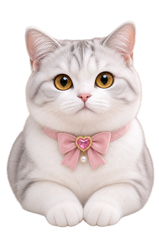
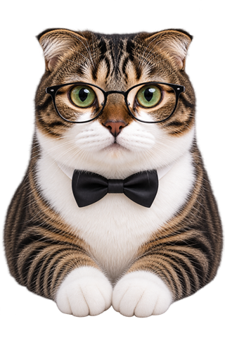
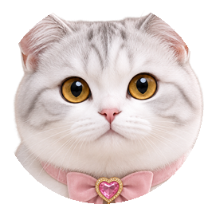
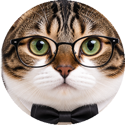

Parent × Child Temperament Match
애한테 소리지르고
재우고 나서 후회한 밤이 있다면
부모가 이상한 게 아니라, 기질 조합이 다른 겁니다.
우리 아이 기질과 내 성향, 둘이 부딪히는 정확한 지점과 내일 아침 딱 하나 바꿀 것까지 알려드려요. 공개된 연구와 검증된 척도를 학습해 분석합니다.


💬 냥구원 냥쪽상담실
우리 아이 검사 결과를 아는 두 연구원과 상담해보세요
츄비 마음부터 들어주는 공감 담당
›칸쵸 원인부터 짚고 처방 하나 주는 팩트 담당
›여기부터 심화 풀이
외향성·온정·성실… 다섯 축 각각의 등급별 해설과
나의 무기 · 살펴볼 지점이 내 점수 기준으로 열려요
+ 🩺 냥쪽처방 1회권 선물
칸쵸 · 여기부터가 팩트다냥. 다섯 축이 실제 하루에 어떻게 나오는지, 네 무기와 약점을 짚어놨다냥.
여기부터 심화 풀이
활동량·리듬·민감성… 10가지 온도 각각의 등급과
맞춤 해설이 우리 아이 기준으로 열려요
+ 🩺 냥쪽처방 1회권 선물
칸쵸 · 여기부터는 내 구역이다냥. 열 가지 온도를 하나씩 짚고, 오늘 집에서 바꿀 것부터 순서대로 적어놨다냥.
📌 이 결과, 사라지면 아깝잖아요
로그인해두면 결과가 저장되고, 아빠·형제·조부모까지 가족 검사와 궁합도 이어서 볼 수 있어요.
지금은 로그인 없이도 계속 볼 수 있어요
점수가 낮아도 괜찮아요. 조화적합성 이론의 핵심은
"기질은 못 바꾸지만, 맞추는 방법은 배울 수 있다"입니다.
누구의 잘못도 아니에요. 기질 조합의 문제일 뿐.
마찰 지점과 츄비·칸쵸의 처방이 잠겨 있어요
마찰 유형별로 검증된 연구 기반의 실전 대사와 1주 플랜을 드려요.
심층 코칭이 잠겨 있어요
무작위 임상시험으로 검증된 개입 연구에서 뽑은
"오늘 밤 쓰는 대사 3개 + 1주 실행 플랜"
📕 우리 집 이야기 — 온가족 종합 리포트
원가족 → 내 성향 → 아이 기질 → 궁합까지 한 권으로
+ 냉장고에 붙이는 인쇄용 한 장 ( 5 · 5,000원)
조합별 풀이와 역할 나누기가 잠겨 있어요
칸마다 왜 그런지 · 어떤 장면을 누구에게 맡길지
+ 이번 주 가족 실험
2장부터 마지막 인쇄용 한 장까지 잠겨 있어요
나의 에너지 → 아이의 날씨 → 우리 둘의 화학작용 → 우리 집 사용설명서
+ 어린이집 선생님·조부모님께 보여줄 요약 한 장
겪고 있는 변화가 있다면 눌러주세요 (선택)
부모가 되는 방식은 자신이 받은 양육의 영향을 받는다는 게 여러 종단연구와 메타분석의 결론이에요. 하지만 그 힘은 완만한 경향이지 운명이 아닙니다. 자신이 어떻게 자랐는지 돌아보고 말로 정리할 수 있는 것 — 지금 이 리포트를 읽는 행위 자체가 대물림의 고리를 느슨하게 만드는 가장 검증된 방법이에요.
👵 조부모님이 '부모 성향 검사'를 직접 해보시면, 조부모×손주 궁합 리포트도 볼 수 있어요. 내가 자란 환경을 함께 이해하는 또 하나의 방법입니다.
여기부터 심화 풀이
이 집에서 얻은 힘 · 육아에서 만나기 쉬운 순간 ·
대물림을 다루는 나만의 처방이 열려요
칸쵸 · 여기부터다냥. 그 방식이 지금 네 육아에 어떻게 스며들었는지, 어디서 끊으면 되는지 짚어놨다냥.
🗳 투표 항목 (직접 쓰거나, AI가 채운 걸 고쳐도 돼요)
츄비·칸쵸 연구원과의 상담은 기질냥구소 서버가 대신 처리합니다. 손님이 따로 설정할 건 없어요.
대화 내용은 답변을 만드는 데만 쓰이고, 대나무숲에 직접 올리지 않으면 공개되지 않습니다.
아이 실명은 처음부터 받지 않아요 — 애칭만 씁니다.
성향 해설 · AI 시대 관점 · 지금 해줄 것 · 오해받기 쉬운 지점
칸쵸 · 여기부터다냥. 왜 이 방향이 맞는지, 부모가 뭘 열어주면 되는지 순서대로 적어놨다냥.
어떤 얘기든 공감이 필요하면 · 마음부터 듣습니다
감정 빼고 객관적인 조언이 필요하면 · 원인부터 짚습니다
✍️ 상황을 자세히 쓸수록 상담 정확도가 높아져요 — 언제·어디서·아이가 뭘 했고·내가 어떻게 반응했는지